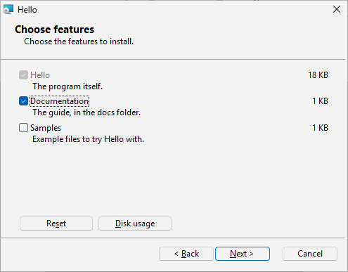

8 선택 구성요소: 기능과 사용자의 선택
목표: 무엇을 설치할지 사용자가 고르게 한다. 프로그램 자체는 늘 설치하고, 문서는 보여 주며 표시된 채로 두고, 예제는 보여 주되 표시하지 않고, 진단 부분은 숨겨 두었다가 요청할 때만 설치한다.
8.1 기능#
기능(feature)은 사용자가 고를 수 있는 제품의 한 부분이다: 설치 파일의 트리에서 제목, 설명, 표시가 있는 한 줄이다. 모든 파일은 정확히 한 기능에 속하고, 한 기능에는 파일이 몇 개든 들어갈 수 있다.
8.2 원본#
# tutorial 08: hello.toml
format = 1
[package]
name = "Hello"
manufacturer = "Example Software"
version = "$(VERSION)"
arch = "x64"
upgrade-code = "{3F2A6C1D-8B4E-4F7A-9C2D-5E6F7A8B9C0D}"
ui = "features"
license = "LICENSE.txt"
[define]
VERSION = "1.6.0"
[feature.Main]
title = "Hello"
description = "The program itself."
required = true
[feature.Documentation]
title = "Documentation"
description = "The guide, in the docs folder."
[feature.Samples]
title = "Samples"
description = "Example files to try Hello with."
level = 2
[feature.MoreSamples]
title = "More samples"
description = "Samples in sub folders."
parent = "Samples"
follow-parent = true
[feature.Diagnostics]
title = "Diagnostics"
hidden = true
level = 3
[dir.INSTALLDIR]
path = "$(ProgramFiles)/Hello"
feature = "Main"
[dir.DocsDir]
path = "$(INSTALLDIR)/docs"
feature = "Documentation"
[dir.SamplesDir]
path = "$(INSTALLDIR)/samples"
feature = "Samples"
[dir.MoreSamplesDir]
path = "$(INSTALLDIR)/samples/sub"
feature = "MoreSamples"
[file.Hello]
dir = "INSTALLDIR"
source = "dist/hello.exe"
[files.DocFiles]
dir = "DocsDir"
glob = "dist/docs/**"
[files.SampleFiles]
dir = "SamplesDir"
glob = "dist/samples/*.txt"
[files.MoreSampleFiles]
dir = "MoreSamplesDir"
glob = "dist/samples/sub/*.txt"
[file.Readme]
dir = "INSTALLDIR"
source = "dist/readme.txt"
feature = "Diagnostics"
[shortcut.StartMenu]
dir = "Programs"
name = "Hello"
target = "file:Hello"8.3 기능 선언하기: [feature.ID]#
| 키 | 뜻 |
|---|---|
title | 체크박스의 글 |
description | 그 아래 줄 |
level | 1(기본): 기본으로 설치. 2 이상: 보여 주지만 고를 때만 설치 |
required = true | 늘 설치: 상자가 표시된 채 바꿀 수 없다 |
parent = "Samples" | 다른 기능 아래에 들여 써서 놓인다 |
follow-parent = true | 부모가 설치될 때 정확히 함께 설치 |
default-when = "OLDPACK" | 기본은 꺼짐(level 이 1보다 큼), 조건이 맞으면 기본으로 켜짐 |
advertise = "disallow" | 이 기능은 광고(필요할 때 설치)되지 않는다 |
hidden = true | 목록에 아예 보이지 않음 |
광고 바로가기는 처음 쓸 때 그 기능을 설치한다. 바로가기에 advertise = true 와 icon 을 주면 Windows 가 아이콘을 보여 주고, 처음 실행할 때 기능을 설치하며, 파일이 빠지면 고친다(MSI 전용. 바로가기 장 참고).
기능 ID 는 dir, 파일과 이름 공간을 함께 쓴다: 기능 Documentation 과 폴더 DocsDir 는 ID 가 달라야 한다(아니면 rubrapack 이 RP1301 로 알린다).
8.4 파일을 기능에 넣기: feature#
- dir 에: 그 폴더의 모든 파일이 그 기능에 속한다 -
DocsDir는guide.txt를Documentation에,SamplesDir는sample1.txt를Samples에 넣는다. - 파일이나 파일 묶음에: 그 파일(묶음)이 폴더와 상관없이 그 기능에 속한다 -
Readme는Main의 폴더인INSTALLDIR에 있지만Diagnostics에 속한다.
dir 은 자기 기능을 아래 dir 에 물려주지 않는다: MoreSamplesDir 는 자기 기능을 따로 댄다. 원본이 기능을 하나라도 선언하면 설치되는 모든 것에 기능이 필요하다. 기능이 없는 것은 rubrapack 이 RP1202 로 짚고 멈춘다.
8.5 사용자가 보는 것#
ui = "features" 에서는 약관과 설치 폴더 다음에 "Choose features"(기능 고르기)가 나온다: 기능마다 체크박스 하나, 그 제목, 오른쪽에 파일 크기, 아래에 설명
[x] Hello (끌 수 없음)
The program itself.
[x] Documentation
The guide, in the docs folder.
[ ] Samples
Example files to try Hello with.다른 기능 아래의 기능은 들여 써서 그 밑에 놓이고, 부모의 상자가 표시되어 있지 않은 동안 꺼져 있다. Diagnostics (hidden)와 More samples(follow-parent: Samples 와 함께 온다)는 목록에 없다. "Disk usage"(디스크 사용량)는 드라이브마다 공간을 보인다.
기능이 페이지에 다 들어가지 않으면(열 개쯤 넘거나 세 단계보다 깊으면) 페이지는 대신 Windows Installer 의 기능 트리를 보인다: 줄마다 메뉴가 있고("Will be installed on local hard drive", "Entire feature will be unavailable", …; 이 글들은 Windows 에서 오므로 영어로 남는다), 줄을 고르면 설명과 크기가 보인다.
기본 설치(두 번 누르고 다음, 다음, …)는 Hello 와 문서를 설치한다.

그림 8.1 — 기능 고르기: Samples 와 More samples 는 제안되지만 골라져 있지 않고, Diagnostics 는 숨어 있다
8.6 명령줄에서 고르기#
기능은 속성으로 고르므로 조용한 설치도 고를 수 있다:
| 명령 | 설치하는 것 |
|---|---|
msiexec /i hello.msi /qn | 기본: Main, Documentation |
msiexec /i hello.msi /qn ADDLOCAL=Samples | 기본과 예제(따라가는 More samples 포함) |
msiexec /i hello.msi /qn ADDLOCAL=ALL | 숨긴 것까지 모든 기능 |
msiexec /i hello.msi /qn INSTALLLEVEL=3 | level 이 3 이하인 모든 기능: 여기서는 전부 |
msiexec /i hello.msi /qn REMOVE=Documentation | 문서를 뺀 기본 |
기능 ID 는 대소문자를 가리고 쉼표로 나눈다: ADDLOCAL=Samples,Diagnostics. required 는 페이지만 묶는다: 명령줄의 REMOVE=Main 은 여전히 따른다(Windows Installer 가 그렇게 동작한다).
8.7 나중에 바꾸기#
설치한 뒤 "설치된 앱"은 Hello 에 수정을 보인다. 설치 파일의 유지 관리 페이지가 열리고 변경, 복구, 제거가 있다. 변경은 설치된 것이 표시된 같은 페이지를 보이고, 사용자는 부분을 더하거나 뺀다 - 처음에 뺀 예제를 아무것도 지우지 않고 이렇게 설치한다. 이 페이지의 변경은 다른 대화창 세트(basic, minimal, installdir)에도 있다. 그 세트들은 설치할 때는 기능 페이지를 보이지 않는다. 설치된 제품에 명령줄로는:
msiexec /i hello.msi ADDLOCAL=Samples
msiexec /i hello.msi REMOVE=Samples8.8 안에서 무슨 일이 일어났나#
C:\work\hello> rubrapack inspect hello.msi Feature
Feature Feature_Parent Title Description Display Level Directory_ Attributes
...
Diagnostics Diagnostics 0 3 0
Documentation Documentation The guide, in the docs folder. 3 1 0
Main Hello The program itself. 1 1 16
MoreSamples Samples More samples Samples in sub folders. 7 1 2
Samples Samples Example files to try Hello with. 5 2 0Display는 목록의 순서다(원본 순서의 홀수). 0 은 기능을 숨긴다.Level은 수준이다. Windows 는 수준이 속성INSTALLLEVEL(1)보다 높지 않은 기능을 기본으로 설치한다.Attributes는 비트 플래그다: 16 은 "없앨 수 없음"(required), 2 는 "부모를 따라감".
FeatureComponents 표는 컴포넌트 - 파일 - 마다 그 기능을 잇는다:
C:\work\hello> rubrapack inspect hello.msi FeatureComponents
...
Documentation C_a10be66379e69940a2e0
Main C_185f8db32271fe25f561
Samples C_a5674982edf0797da30f
...